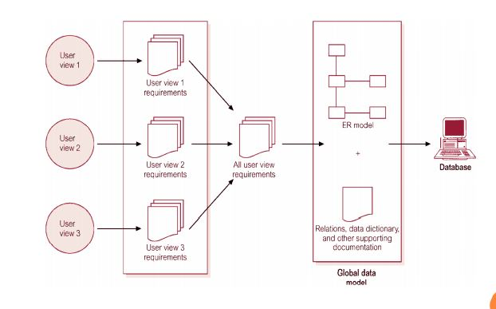

Previous Next
Mendefinisikan Scope dari sistem basis data, pemakai dan aplikasi Antarmuka untuk pemakai, batasan response time, kebutuhan penyimpan dan pemrosesan diidentifikasi.
Pada akhir dari tahap ini , desain konseptual, desain logika dan fisik dari sistem basis data dari DBMS sudah siap.
Meliputi proses menentukan definisi basis data eksternal, konseptual dan internal, membuat file basis data kosong dan implementasi aplikasi perangkat lunak.
Basis data dipopulasikan dengan menyimpan data langsung atau mengubah file yang sudah ada ke format sistem basis data.
Aplikasi perangkat lunak dari sistem lama dikonversikan ke sistem baru.
Sistem baru diuji coba dan divalidasi
Sistem basis data dan aplikasi dioperasikan. Biasanya sistem lama dan baru dioperasikan secara paralel dalam beberapa waktu.
Selama tahap operasional, sistem secara tetap dimonitor dan dipelihara. Perubahan dan pengembangan dapat terjadi baik pada isi data maupun aplikasi perangkat lunak
Pada tahap ini ada 3 pendekatan dalam manajemen kebutuhan :
1. Centrelized
2. View Integration

3. Kombinasi antara centralized dan view integration
Pada tahap ini ada 2 desain :
1. Desain Skema Konseptual
Memberikan gambaran yang lengkap dari struktur basis data yaitu arti, hubungan, dan batasan-batasan. Conceptual schema bersifat tetap. Alat komunikasi antar pemakai basis data, designer, dan analis. Harus bersifat: Mampu menyatakan relationship, batasan-batasan, Diagram, Formal dan minimum dalam menyatakan spesifikasi data (tidak ada duplikasi) dan Simple
2. Desain Transaksi dan Aplikasi
Transaksi dikelompokkan dalam 3 kategori :
Dan ada juga beberapa aturan pokok dalam merancang User Interface:
1. Pemberian nama form jelas, menerangkan kegunaan dari form dan laporan
2. Pemberian Intruksi dapat dimengerti
3. Pengelompokan secara logik dan pengurutan field
4. Tampilan form/report secara visual
5. Nama field familiar
6. Pemakaian istilah dan singkatan konsisten
7. Penggunaan warna konsisten
8. Ruang yang tersedia dan cakupan untuk field pemasukan data
9. Perpindahan kurson yang tepat
10. Perbaikan kesalahan untuk karakter individual, maupun field secara keseluruhan
11. Pesan kesalahan untuk nilai yang tdk diterima
12. Fiel pilihan ditandai dengan jelas
13. Pesan penjelasan untuk field
14. Penanda akhir yang menyatakan proses sudah selesai
Pada tahap ini ada beberapa langkah utama dalam memilih DBMS : ( Connoly )
Faktor dalam pemilihan DBMS :
Pada tahap ini ada 2 proses pemetaan data :
1. Pemetaan yang Tidak Tergantung pada Sistem (SystemIndependet Mapping ) Pada bentuk ini, pemetaan tidak mempertimbangkan karakteristik khusus atau kasus khusus yang diaplikasikan ke implementasi DBMS dari model data.
2. Penyesuaian Skema ke DBMS yang Spesifik (Tailoring the Schemas to Specific DBMS ) DBMS yang berbeda mengimplementasikan model data dengan menggunakan pemodelah khusus. Hasilnya merupakan pernyataan DDL dari DBMS yang dipilih
Pada tahap ini ada beberapa petunjuk dalam pemilihan perancangan basis data secara fisik :
1. Waktu Respon
2. Penggunaan Ruang Penyimpanan
Jumlah ruang penyimpanan yang digunakan oleh file basis data dan struktur- struktur jalur akses.
3. Transaction Throughput
Rata-rata jumlah transaksi yang dapat diproses per menit oleh sistem basis data, dan merupakan parameter kritis dari sistem transaksi (misal : digunakan pada pemesanan tempat di pesawat, bank, dll).
--> Konvesi & Loading Data
--> Testing & Evaluasi
--> Pengoperasian & Perawatan